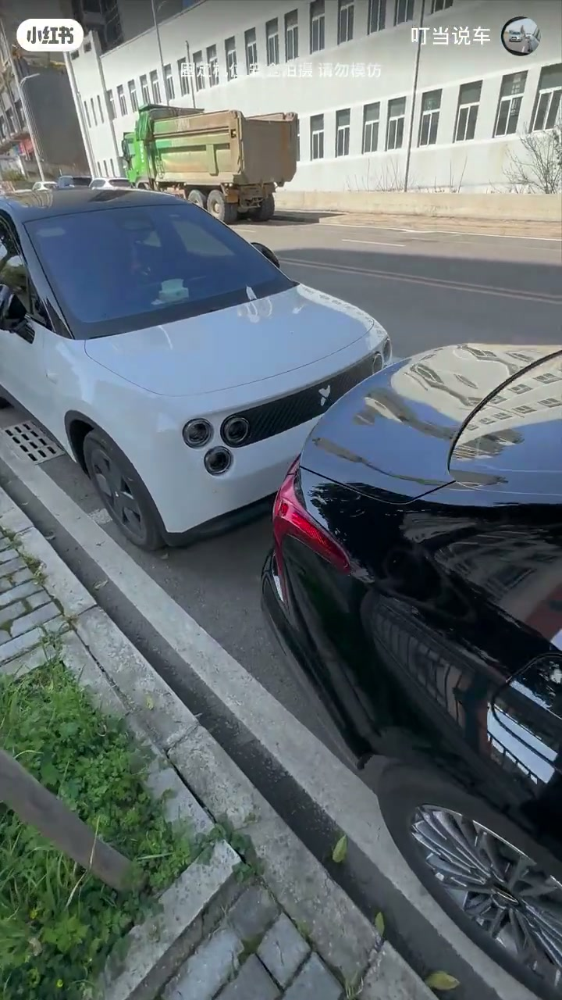
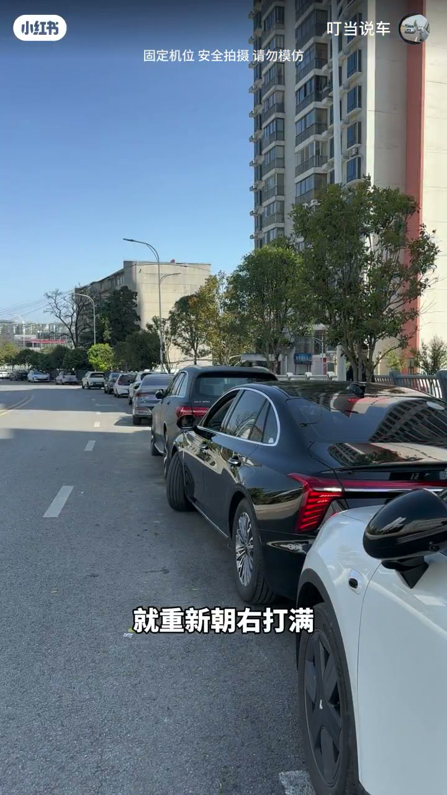
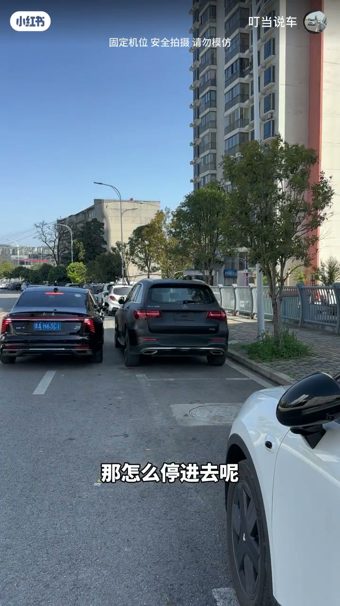
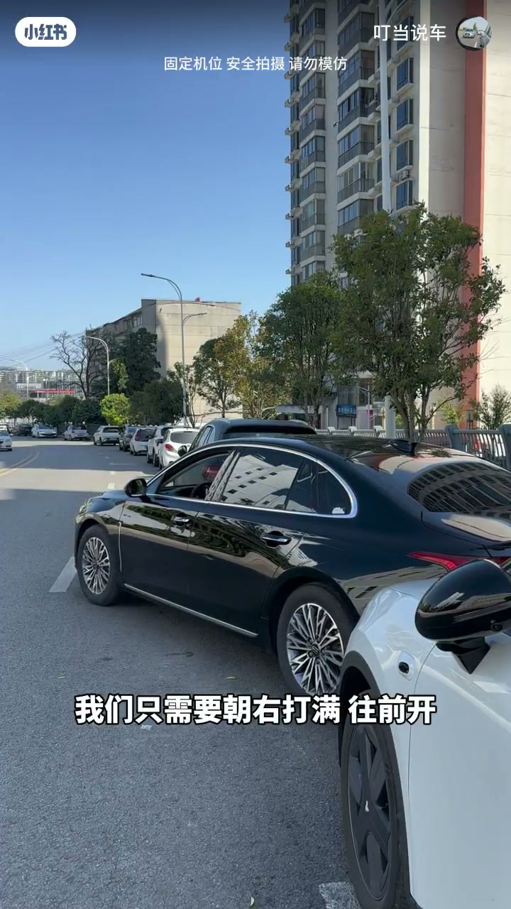

内容要点
知识结构
[00:00→00:50]
出库腾挪
左打满往前开（少走），没把握就右打满继续往后倒（多走），重复直到顺利出库。
[00:50→01:20]
入库定位
顺着车位往前开，驾驶员对齐旁车保险杠停车，位置比旁车更靠后，避免刮车头。
[01:20→01:49]
倒车与微调
右打满倒车，右后视见前门把手与路沿重合后左打满；被卡住则右打满小幅前进再继续。
总结
超短车位靠「打满+前进少/后退多」反复腾空间，入库先偏后站位再按门把手参照打轮。
图文实录
场景：前后都有车的超短位
00:00 – 00:30
实拍路边连续停满的车位，字幕「OK咱们直接讲重点」。作者指出像这种前后都有车、车位非常短的侧方位，很多新手看一眼就开走——接下来拆出库与入库两套动作。

[00:08] 场景：超短侧方位，前后都有车
Scene: ultra-short parallel spot with cars front and back
出库：左前进少、右后退多
00:30 – 00:55
先朝左打满方向往前开；往前时可以稍微少走一点，因为前方不好观察。没把握就重新朝右打满继续往后倒。重复「左打满往前开、右打满往后倒」：倒的时候多走点，往前少走点，几次后就能顺利出库。
倒的时候多走点
往前的时候就少走点
这样重复几次之后就可以顺利的出库了

[00:40] 出库口诀：前进少走、后退多走，反复腾挪
Exit tip: advance less, reverse more, repeat to create space
入库：先偏后站位
00:55 – 01:20
停进去方法差不多：先顺着车位往前开，用驾驶员对齐旁车保险杠就停车。此时自己的车位会比旁车更靠后一点——这是为了避免入库时刮伤车头。然后直接朝右打满往后倒车。
用驾驶员对其旁车逼住就停车
此时我们的车位会比旁车车位要靠后一点

[00:55] 入库站位：对齐旁车并故意更靠后
Entry stance: align with the side car but stop farther back
[01:12] 右打满倒车，准备观察右后视参照
Full right lock reverse; watch the right-mirror reference
门把手参照与卡住微调
01:20 – 01:49
倒车时通过右后视镜观察前门把手：看到前门把手与路边缘重合，就朝左打满继续倒。后面没空间被卡住别着急——朝右打满往前开，不需要开太多，没把握就停，再继续刚才的倒车节奏。
看到前门把手与路边缘重合了
我们只需要朝右打满往前开
没把握就停

[01:28] 卡住时：右打满小幅前进，没把握就停
If stuck: full right lock, inch forward; stop if unsure